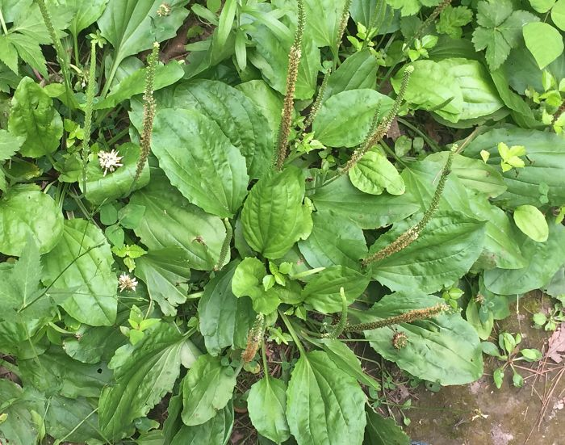
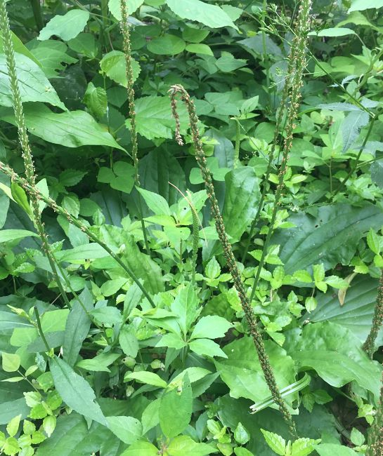
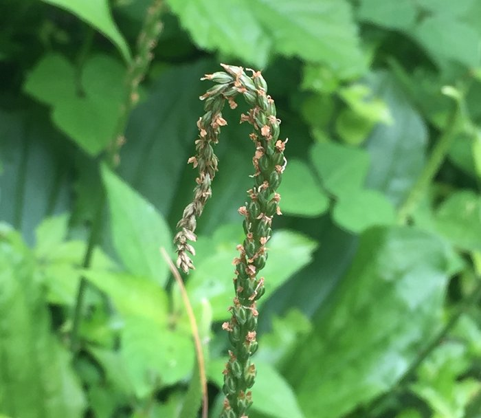
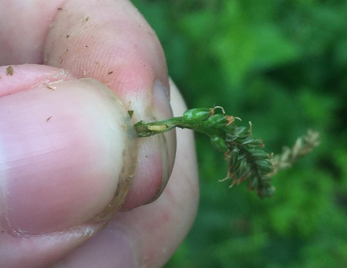
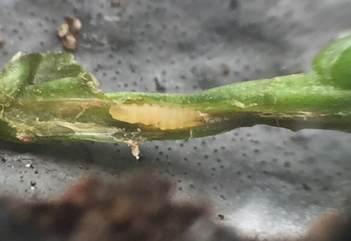
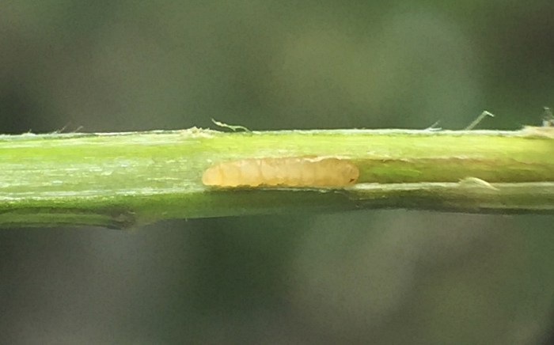
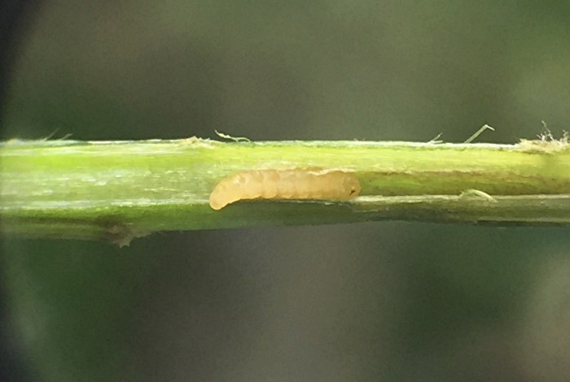
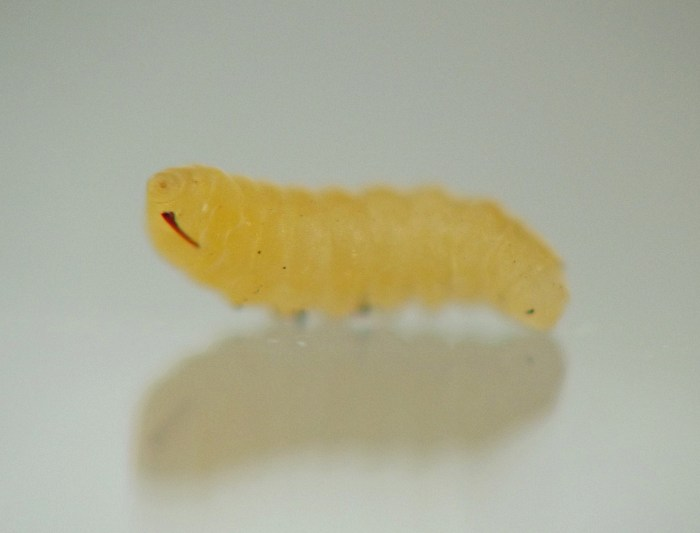
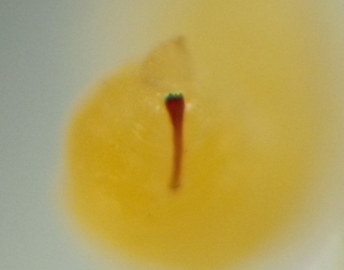

Local feeder (Diptera: Cecidomyiidae) in stems of Plantago
| Record no.: | 0387 |
|---|---|
| Feeding guild: | Local feeder in stem |
| Taxonomy: | Diptera: Cecidomyiidae |
| Stages observed: | trace, larva |
| Distribution observed: | IA |
| Hosts in Plantago: | P. rugelii (Rugel's plantain) |
I found this local feeder by observing wilted tips of the flowering/fruiting spikes of the host in early July. Just below the wilted portions of affected stems, pale orange cecidomyiid larvae dwelled in the stem interior. One such affected stem contained three larvae, positioned end to end close to one another not far below the stem apex. At least one of these larvae dwelled in a short tunnel with lightly discolored brownish walls; the tunnel was approximately 10mm long plus the length of the larva. The larval spatula appears to have three teeth on its anterior end, with the middle tooth slightly shorter than the two on the outside.

 Prev
Prev
{kind=link}
{kind=link}

{kind=link}

{kind=link}

{kind=link}

{kind=link}

{kind=link}

{kind=link}

{kind=link}

Coll. 07/07/23, field and lab photos taken same day (01-10).
Page created: October 26, 2023. Last update: February 13, 2026